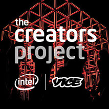

Chambara is a local multiplayer stealth-deathmatch game with only two colors, allowing players to seamlessly camouflage themselves with the environment. This empowers players to sneak, search, and ambush each other in dramatic, stylish duels.
Positioning in 3D space makes you invisible from one angle, but vulnerable from another.
Maneuver skillfully to lure opponents into ambushes.
Mastery comes with spatial understanding.
Get The Demo
As Featured On:
"The binary color system of Chambara is a fantastic concept that makes your positioning in 3D space critical."
- 
"The setting and primary gameplay mechanic was inspired by a cult classic episode of the Cartoon Network series Samurai Jack."
"It looks like a really cool and stylized version of that one really awkward Windows display theme called 'High Contrast'."

"Chambara is the Samurai Jack game of our Cubo-Futurist dreams."

"... a fantastically tense firstperson stealth hunt punctuated by intense bursts of panicked action."

"We love games like this. There’s a timeless beauty to the art of holding down a couch with a group of friends..."

"... one of the most fun and interesting multiplayer games at the [Indiecade @ E3] show."